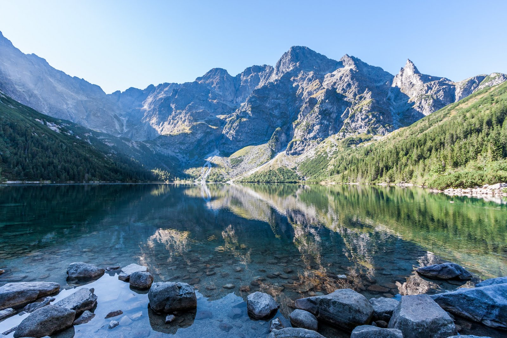
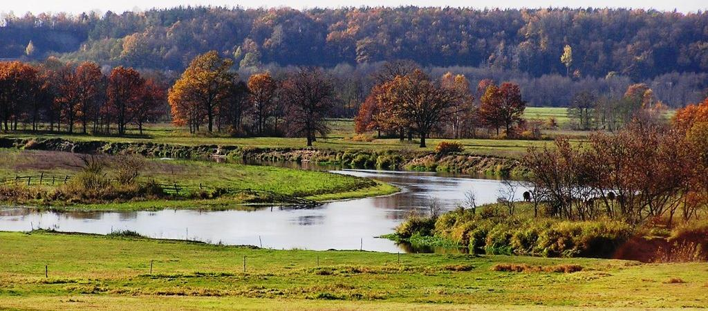
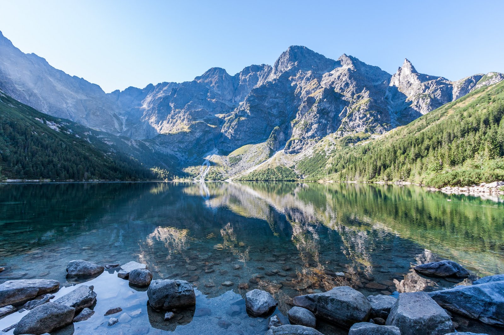
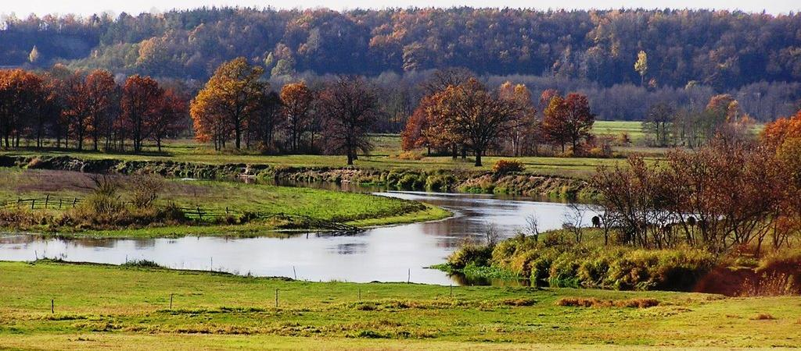
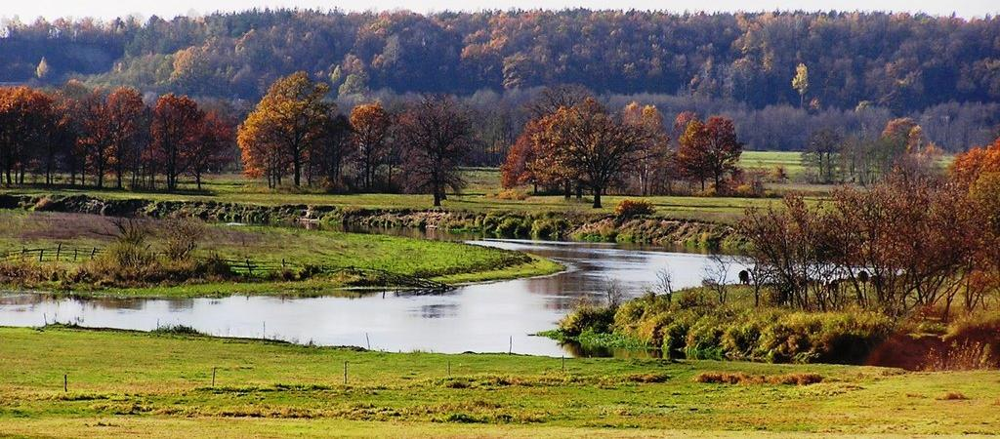

Przedstawiamy Piękną Polskę!
- Jaskinia Raj

Zobaczymy tam wspaniałe twory natury. Stalaktyty, stalagmity i stalagnaty.
- Morskie Oko

Wspaniałe jezioro w górach Świętokrzyskich. Góry odbijają się w jego tafli jak w lustrze.
- Dolina Narwi

Bagienna dolina Narwi jest nazywana nawet polską Amazonią. Znajdujące się tam zbiorniki wodne zapierają dech w piersiach.
- Puszcza Białowieska

Puszcza Białowieska jak widać na zdjęciu jest wręcz bajkowym lasem.

Wspaniałe jezioro w górach Świętokrzyskich. Góry odbijają się w jego tafli jak w lustrze.
- Dolina Narwi

Bagienna dolina Narwi jest nazywana nawet polską Amazonią. Znajdujące się tam zbiorniki wodne zapierają dech w piersiach.
- Puszcza Białowieska
Puszcza Białowieska jak widać na zdjęciu jest wręcz bajkowym lasem.

Puszcza Białowieska jak widać na zdjęciu jest wręcz bajkowym lasem.